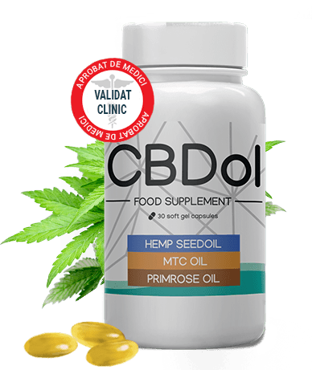
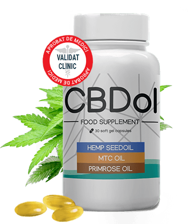

Acum este disponibil
fără rețetă
Puternic și eficient
medicament contra hipertensiunii arteriale și a disfuncției vasculare —
CBD- ulei cu spectru complet
Trăiți o viață activă și uitați de hipertensiune cu CBDol
- Îmbunătățește funcția inimii
- Normalizează tensiunea arterială
- Restaurează vasele de sânge
- Fortifică organismul în mod complex
 

Absolut legal
în toată țara
Unde vă livrăm
comanda?
 13
persoane se uită acum la această ofertă!
13
persoane se uită acum la această ofertă!
 25
de persoane au cumpărat CBDol în ultima oră!
25
de persoane au cumpărat CBDol în ultima oră!
OFERTA SPECIALĂ!